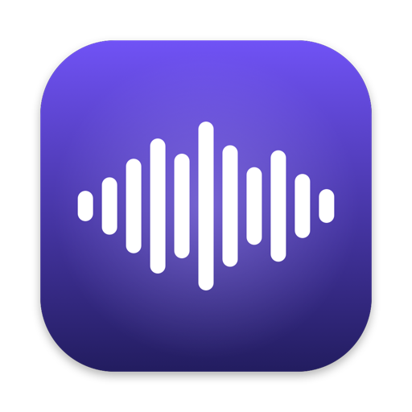

Распознаёт, пока вы говорите
Запись режется на фразы по паузам, и каждая распознаётся сразу. Когда вы нажимаете стоп, остаётся дописать только последние слова — поэтому текст готов примерно через секунду, даже после десяти минут диктовки.
Голосовой ввод для Mac · бесплатно
Нажмите горячую клавишу, скажите — и текст окажется там, где стоит курсор. С пунктуацией, сленгом и английским посреди русской речи. Без интернета.
macOS 14 и новее · Apple Silicon · 3 МБ
Печатать — медленно. Говорить — в несколько раз быстрее. Record AI превращает речь в аккуратный текст в любом приложении: в заметках, почте, Telegram, Cursor или терминале.
Запись режется на фразы по паузам, и каждая распознаётся сразу. Когда вы нажимаете стоп, остаётся дописать только последние слова — поэтому текст готов примерно через секунду, даже после десяти минут диктовки.
Нейросеть Whisper работает на Neural Engine вашего Mac. Голос не уходит ни на какой сервер — можно диктовать хоть в самолёте.
Язык определяется для каждой фразы. Прочитайте вслух ошибку из консоли посреди русского объяснения — она останется на английском.
Слова-паразиты убираются, только когда они точно паразиты. «Сделай текст короче» останется как есть. Попробуйте сами — это те же правила, что в приложении.
Зажали клавишу — идёт запись, отпустили — текст вставлен. А короткое нажатие включает обычный режим: нажал, говоришь, нажал ещё раз.
⌥⇧ Space показывает три последние диктовки прямо у курсора. Клик — и нужная вставлена. Нажмите на любую.
Закончить или отменить диктовку можно, не отрывая рук от клавиатуры.
Переключайтесь между приложениями и рабочими столами — текст вставится туда, где был курсор в начале.
Тихий сигнал на старте и стопе — слышно, что запись пошла. Нажмите на каплю.
Файл Record-AI.dmg весит 3 МБ.
Откройте DMG и перетащите Record AI на папку Applications.
При первом открытии нажмите «Готово», затем Системные настройки → Конфиденциальность и безопасность → Всё равно открыть.
Микрофон — чтобы слышать. Универсальный доступ — чтобы вставлять текст. Первая подготовка модели займёт до 15 минут.
Record AI — бесплатный проект, и он не подписан платным сертификатом Apple за $99 в год. Поэтому macOS не может проверить разработчика и просит подтвердить запуск один раз. Если удобнее Терминал, то же самое делает команда:
xattr -dr com.apple.quarantine "/Applications/Record AI.app"
Бесплатно. Без подписки. Без интернета.
Скачать для MacВерсия 1.0.1 · macOS 14 Sonoma и новее · Mac на Apple Silicon (M1 и новее)
Да. Без подписки, рекламы и ограничений по времени.
Используется Whisper large-v3-turbo — одна из лучших открытых моделей распознавания речи. Она понимает разговорную речь, сленг и расставляет знаки препинания. Английские термины посреди русской фразы тоже остаются на английском.
Везде, где можно поставить курсор: заметки, почта, мессенджеры, браузер, редакторы кода, терминал.
Нужен Mac на Apple Silicon (M1, M2, M3, M4 и новее) с macOS 14 Sonoma или новее. На Mac с процессором Intel приложение не запустится.
Само приложение — 3 МБ, модель распознавания скачивается при первом запуске — около 1,6 ГБ.
Откройте Record AI через Spotlight (⌘ Space) — появится окно настроек. Там можно назначить любое сочетание или даже одну клавишу, например Ё.
Откройте Record AI через Spotlight, нажмите «Выйти из Record AI» и перетащите приложение в корзину. Модель и история лежат в папке ~/Library/Application Support/RecordAI — её тоже можно удалить.